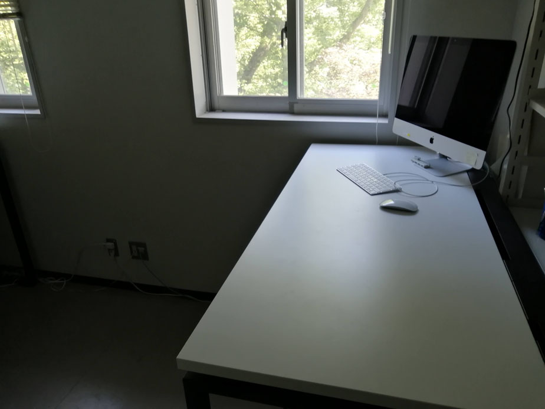
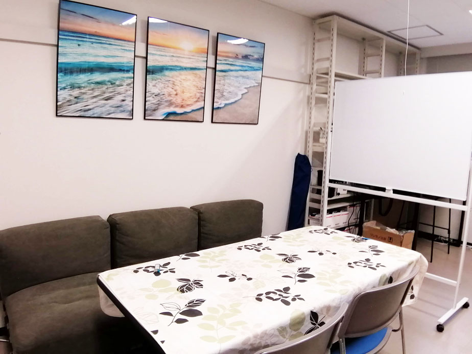
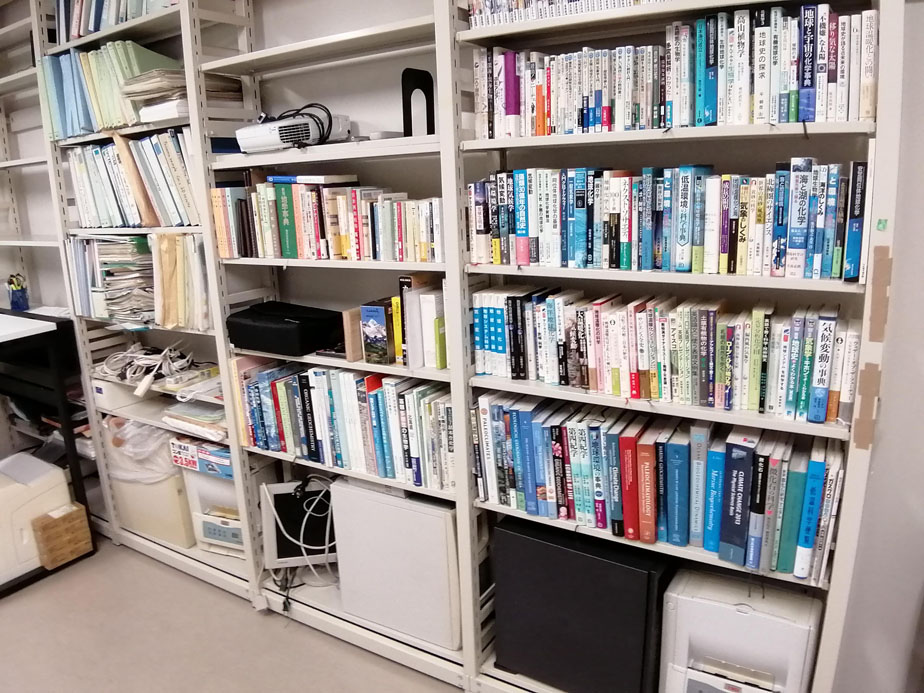

ラウンジの開設☕️
  お知らせ
研究の概要
地球の気候システムは複数のサブシステムから成り、このシステムに外部から強制力が加えられると複雑に相互作用し、気候が変化します。将来の気候変動を正しく予測するにはこの気候システムがどのような仕組みで動いているのかを深く理解する必要があります。
しかし強制力に対する各サブシステムの応答は短時間ですぐに応答するものから、長い時間をかけてゆっくりと応答するものまで様々であり、いまだにその全容は明らかになっていません。気候システム全体を理解するには長い時間スケールを含む気候変動の時系列データの解析が必要となります。
当研究室では世界各地の様々な古気候アーカイブ（海洋、湖沼堆積物やアイスコアなど）から様々な時間スケールの気候変動を復元し、得られた古気候データを解析することで、気候システムのからくりの解明に挑戦しています。
研究対象

キーワード
地球システム，気候システム，テレコネクション，放射強制力，気候感度，気候フィードバック，
エアロゾル，北極振動，大西洋数十年規模振動，太平洋十年規模振動，エルニーニョ南方振動，
モンスーン，中世温暖期，小氷期，氷期-間氷期サイクル，ミランコビッチサイクル，スーパー間氷期，
ダンスガード・オシュガー・サイクル，北半球の氷床発達，鮮新世温暖期，後期中新世全球寒冷化，
中期中新世気候最適期，バイオマーカー，微化石，同位体組成，海洋堆積物，湖沼堆積物，泥炭堆積物, アイスコア